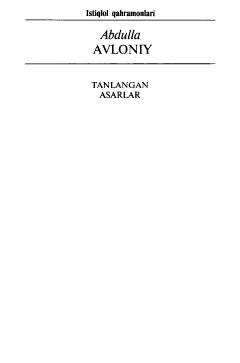

TAAbdulla Avloniyning tanlangan asarlari jamlangan birinchi jild.
Ushbu kitob buyuk ma'rifatparvar, jadid adabiyotining ko'zga ko'ringan vakili Abdulla Avloniyning tanlangan asarlari ikki jildligining birinchi jildi bo'lib, uning she'rlari va ibratli hikmatlarini o'z ichiga oladi. Adibning hayoti va ijodiy faoliyati, milliy uyg'onish davridagi adabiy-madaniy muhit haqida qimmatli ma'lumotlar berilgan. Asar keng kitobxonlar ommasi, talabalar va adabiyot muxlislariga mo'ljallangan.